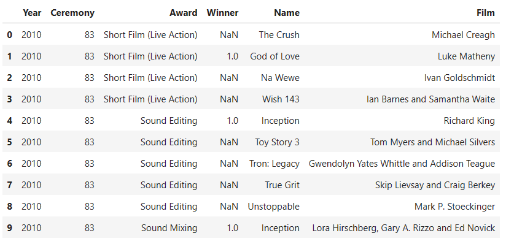

SQL Introduction
Contents
SQL Introduction¶
This tutorial is intended for individuals seeking to derive insights from data. SQL is widely regarded as the fundamental tool for data analysis, enabling users to access, clean, and analyze database-stored data. Despite its simplicity to learn, SQL is employed by major corporations to tackle highly complex problems.
Specifically, this tutorial targets aspiring analysts who possess basic familiarity with Excel but lack coding experience.
What is SQL?¶
SQL stands for Structured Query Language. It is a programming language used for managing and manipulating relational databases. SQL provides a standardized way to interact with databases, allowing users to create, modify, and retrieve data from them. It is widely used in various industries and applications where structured data is stored and needs to be queried and manipulated efficiently. SQL allows users to perform tasks such as creating database schemas, inserting and updating data, and querying and analyzing data using various operations and functions. It is a fundamental tool for working with relational databases and is essential for tasks related to data management, data analysis, and database administration.
Following are few of the advantages of learning SQL.
SQL is easy to learn: SQL has a relatively straightforward syntax and is designed to be user-friendly, making it accessible to beginners. It has a declarative nature, meaning users can focus on specifying what they want from the database rather than how to obtain it.
Portability and Standardization: SQL is a standardized language, which means that the code written in SQL can typically be used across different database systems with minimal modifications. This portability allows for flexibility and reduces vendor lock-in.
Efficient Data Retrieval: SQL’s powerful query capabilities enable users to retrieve specific data from databases quickly and efficiently. With SQL, complex queries involving joins, filtering, sorting, and aggregations can be executed to extract the required information.
Scalability and Performance: SQL databases are known for their scalability, enabling handling large amounts of data and concurrent users. Additionally, SQL optimizers in database systems help to enhance query performance by analyzing query plans and executing them in an optimized manner.
Data Integrity and Security: SQL offers robust mechanisms for maintaining data integrity within databases. It supports features such as constraints, transactions, and foreign key relationships, ensuring that data remains consistent and accurate. SQL databases also provide built-in security features, including access control, user authentication, and data encryption, to protect sensitive information.
Note
SQL is not a case-sensitive language.
What is SQL used for?¶
SQL (Structured Query Language) is primarily used for managing and manipulating relational databases. It serves as a standard language for interacting with databases, performing various tasks related to data management, retrieval, manipulation, and analysis. Here are some of the key uses of SQL:
Data Retrieval: SQL is used to retrieve data from databases. You can write queries to fetch specific information from tables, filter data based on conditions, and sort and group data as needed.
Data Manipulation: SQL allows you to insert, update, and delete data in the database. You can add new records, modify existing ones, and remove unwanted data using SQL commands.
Data Definition: SQL is used to define the structure of databases. You can create tables, specify their columns and data types, define constraints (such as primary keys and foreign keys), and manage indexes.
Data Maintenance: SQL is used to maintain the integrity and consistency of data. You can enforce data validation rules, manage relationships between tables, and ensure data quality.
Data Analysis: SQL provides powerful tools for data analysis. You can aggregate data using functions like SUM, AVG, COUNT, and calculate statistics. This is crucial for generating reports and gaining insights from data.
Data Joins: SQL allows you to combine data from multiple tables using various types of joins (INNER JOIN, LEFT JOIN, etc.). This is essential for querying data that is distributed across multiple tables.
Data Aggregation: SQL enables you to perform aggregation operations on data, such as finding the total sales amount, average salary, maximum values, and more.
Data Sorting: SQL provides mechanisms to sort data based on specific columns in ascending or descending order.
Data Filtering: SQL allows you to filter data using the WHERE clause to retrieve only the rows that meet certain conditions.
Data Transformation: SQL can be used to transform data, convert data types, and perform calculations on data within queries.
Data Security: SQL is used to define user roles and permissions for database access, ensuring that only authorized users can interact with the data.
Stored Procedures and Functions: SQL supports the creation of stored procedures and functions, which are pre-defined sets of SQL statements that can be executed as a single unit. They enhance efficiency and maintainability of code.
Data Migration: SQL is used for transferring data between databases, including importing data from external sources and exporting data to other systems.
Data Backup and Recovery: SQL is used for backing up and restoring databases to prevent data loss due to failures or emergencies.
Application Development: Many applications interact with databases using SQL. This includes web applications, desktop software, mobile apps, and more.
In essence, SQL is a versatile language that is essential for database management, data manipulation, and data analysis. It is a critical tool for anyone involved in working with relational databases, from database administrators to software developers and analysts.
What is a SQL Database?¶
A database is a structured collection of data stored in a computer system. It organizes and manages large amounts of information in tables, with rows representing instances of entities and columns defining their attributes. Databases ensure data integrity, security, and offer operations to manipulate and query data. They are essential for storing and managing data in various domains, including business, finance, healthcare, and more.
If you’re familiar with Excel, you’ll find tables in databases to be similar. Tables have rows and columns, but they are more structured compared to Excel. In a database table, columns are organized and each must have a unique name. Here is an example of a sample table from the 2010 Academy Awards to give you a better idea of this organization:

Congratulations, you’re making progress! Now that you have a good understanding of the fundamentals, let’s delve into SQL and expand your knowledge.